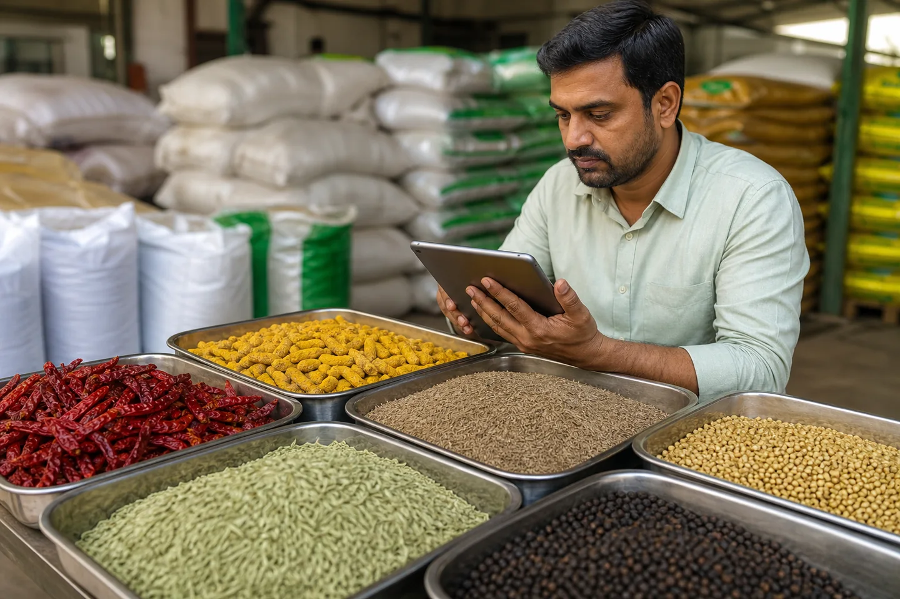

Tendencias de exportación de especias indias 2026: comino, cúrcuma y precios

JFT Agro Editorial • Indian Spice Market Analysis
Este artículo se ha trasladado a una guía relacionada verificada.
Continuar al artículo